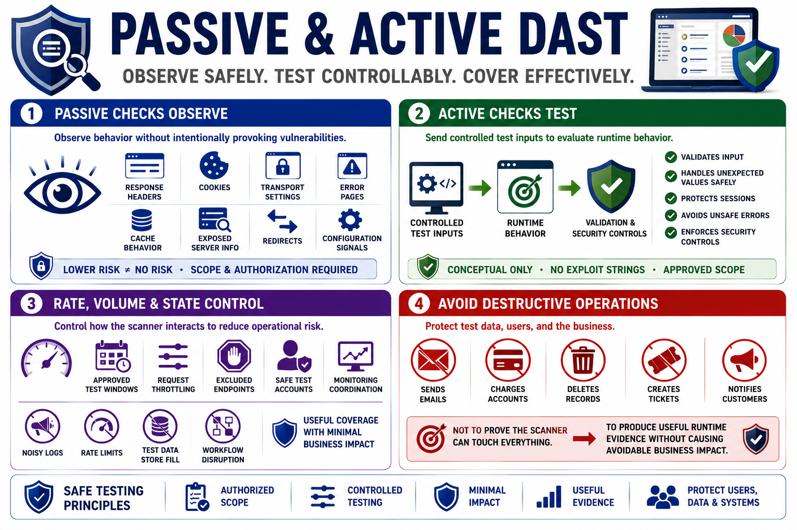

Active and Passive Testing Concepts
Connecting to LMS... Progress: in progress

Narration
Passive DAST checks observe application behavior without intentionally mutating requests in a way designed to provoke vulnerabilities. They may inspect response headers, cookies, transport settings, error pages, cache behavior, exposed server details, redirects, and configuration signals. Passive checks are usually lower risk, but they still require scope and authorization because they involve interacting with a target environment.
Active checks send controlled test inputs or modified requests to evaluate runtime behavior. The purpose is to see whether the application validates input, handles unexpected values safely, protects sessions, avoids unsafe errors, and enforces security controls. In this course, active testing is discussed conceptually, without exploit strings or destructive procedures. The stable principle is controlled testing inside approved scope.
Rate, volume, and state control are part of safe active testing. Scanners can generate many requests, create noisy logs, trigger rate limits, fill test data stores, or affect workflows if not configured carefully. Approved test windows, request throttling, excluded endpoints, non-destructive test accounts, and monitoring coordination help reduce operational risk while preserving useful coverage.
Active testing should avoid destructive operations and protect test data. If a workflow sends emails, charges accounts, deletes records, creates tickets, or notifies customers, it needs special handling or exclusion unless explicitly approved. The goal is not to prove the scanner can touch everything. The goal is to produce useful runtime evidence without causing avoidable business impact.